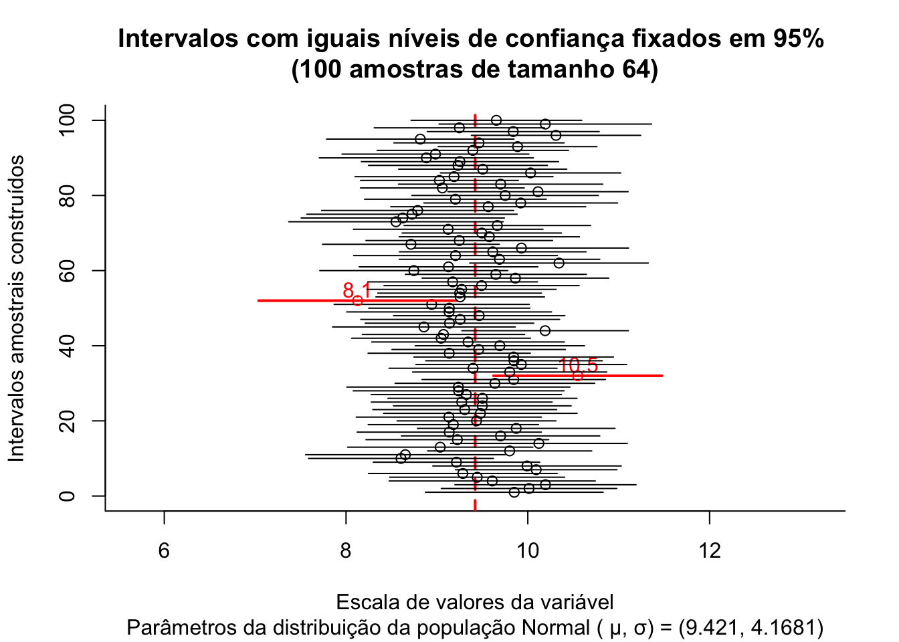

9.2 Intervalos de confiança
Um intervalo de confiança (\(IC\)) pode ser entendido com a faixa de valores delimitada por um mínimo e um máximo, calculados como função direta de um nível de confiança e da variabilidade e inversa da tamanho amostral.
\[ \text{estimativa amostral} \pm confiança.\sqrt\frac{variabilidade}{n} \]
Raramente se dispõe de informação a respeito da variabilidade (\(\sigma^{2}\)) da população estudada. Assim, a variabilidade populacional será frequentemente incorporado na expressão acima, com ligeiras modificações, na forma de sua estimativa amostral (\(S^{2}\)).
De certo modo, um intervalo de confiança reflete uma estimativa objetiva da (im)precisão e do tamanho da amostra de determinada pesquisa e, assim, podemos considerá-lo como uma medida da qualidade da amostra e da pesquisa.
O nível de confiança é designado pela quantidade \((1-\alpha)\) na qual \(\alpha\) é denominado de nível de significância, uma medida da probabilidade de erro.
Dependendo do nível de confiança que escolhemos os limites superior e inferior do intervalo mudam para uma mesma estimativa amostral. Os intervalos de confiança mais utilizados na literatura são os de 90%, 95%, 99% e menos de 99,9%.
O intervalo de confiança de 95% é tradicionalmente o intervalo mais utilizado na literatura e isso está relacionado ao nível de significância estatística (\(P<0,05\)) geralmente mais aceito.
Quanto menor for a amplitude de um intervalo, maior será a precisão da estimativa. Todavia, somente estudos com amostras razoavelmente grandes resultarão em um intervalo de confiança estreito, indicando simultaneamentente com alta precisão e alto grau de confianla a estimativa do parâmetro.
Intervalos de confiança podem ser construídos a quase todas as quantidades estatísticas e suas diferenças (quando se procura estudar se há ou não diferenças entre os parâmetros de duas populaçoes) como, por exemplo:
- médias;
- proporções; e,
- variâncias.
Um intervalo de confiança estabelecido sob certa probabilidade não deve ser interpretado como sendo a faixa de valores, delimitada por um mínimo e máximo, entre os quais o parâmetro da população (o qual se estima ou sobre o qual se infere) se insere.
Mas sim que, extraíndo-se um grande número de amostras de igual tamanho e da mesma população, e construindo-se para cada uma dessas amostras um intervalo de confiança de um mesmo nível de significância (\(\alpha\)), observaremos que uma determinada proporção desses intervalos, chamada de nível de confiança (\(1-\alpha\)) irá, de fato, conter o parâmetro sobre o qual se estima ou sobre o qual se infere. Por conseguinte, uma proporção desses intervalos chamada de nível de significância (\(\alpha\)) não irá conter o verdadeiro valor do parâmetro populacional.
Assim, \((1-\alpha)\) traduz o grau de confiança que se tem que um intervalo de confiança, calculado sobre uma estatística advinda de uma particular amostra de tamanho \(n\) da variável aleatória \(X\), inclua o verdadeiro valor do parâmetro da população:
IC.N = function (N, n, mu, sigma, conf) {
dados=data.frame()
plot(0, 0,
type="n",
xlim=c(mu-0.4*mu,mu+0.4*mu),
ylim=c(0,N),
bty="l",
xlab="Escala de valores da variável",
ylab="Intervalos amostrais construídos",
main=paste0("Intervalos com iguais níveis de confiança fixados em ", 100*conf, "% \n(",N," amostras de tamanho ",n,")") ,
sub=paste0("Parâmetros da distribuição da população Normal ( \u03bc, \u03c3) = (",mu,", ", sigma,")"))
abline(v=mu, col='red', lwd=2, lty=2)
#axis(1, at = c(mu-1*mu, mu, mu+1*mu))
zc = qnorm(1-((1-conf)/2))
#sigma.xbarra = sigma/sqrt(n)
for (i in 1:N) {
x = rnorm(n, mu, sigma)
media = mean(x)
erro= media-mu
sd = sd(x)
li = media - zc * sd/(sqrt(n))
ls = media + zc * sd/(sqrt(n))
temp=cbind(mu, media, erro, li, ls)
dados=rbind(dados, temp)
plotx = c(li,ls)
ploty = c(i,i)
if (li > mu | ls < mu) lines(plotx,ploty, col="red", lwd=2, lend=0)
else lines(plotx,ploty, lend=0)
if (li > mu | ls < mu) points(media, i, col="red", cex=1)+text(y=i+3,x=media, labels=round(media,1), cex=1, col='red')
else points(media, i, col="black", cex=1)
}
colnames(dados)=c("mu", "media", "erro", "li", "ls")
return(dados)
}

## mu media erro li ls
## 1 9.421 8.979 -0.441604 7.985 9.974
## 2 9.421 9.815 0.393700 8.815 10.815
## 3 9.421 8.782 -0.639287 7.706 9.858
## 4 9.421 9.595 0.174469 8.373 10.818
## 5 9.421 9.611 0.190352 8.625 10.598
## 6 9.421 9.218 -0.203030 8.148 10.288
## 7 9.421 8.592 -0.829201 7.608 9.575
## 8 9.421 9.659 0.237725 8.406 10.912
## 9 9.421 8.346 -1.075307 7.364 9.327
## 10 9.421 8.906 -0.515426 7.897 9.914
## 11 9.421 9.230 -0.190621 8.354 10.107
## 12 9.421 8.448 -0.973149 7.536 9.360
## 13 9.421 9.304 -0.116524 8.244 10.365
## 14 9.421 8.831 -0.589942 7.821 9.841
## 15 9.421 9.300 -0.120814 8.118 10.482
## 16 9.421 10.084 0.662647 9.169 10.998
## 17 9.421 8.837 -0.584276 7.829 9.844
## 18 9.421 9.175 -0.245597 8.054 10.297
## 19 9.421 9.059 -0.362415 8.102 10.015
## 20 9.421 9.648 0.227497 8.440 10.857
## 21 9.421 9.745 0.324159 8.769 10.721
## 22 9.421 9.549 0.127657 8.481 10.616
## 23 9.421 9.707 0.286226 8.731 10.683
## 24 9.421 9.787 0.366009 8.658 10.916
## 25 9.421 9.177 -0.244157 7.958 10.396
## 26 9.421 9.478 0.057135 8.500 10.456
## 27 9.421 10.312 0.890566 9.454 11.170
## 28 9.421 8.194 -1.227454 7.236 9.151
## 29 9.421 10.416 0.994521 9.363 11.468
## 30 9.421 9.940 0.518532 9.066 10.813
## 31 9.421 8.643 -0.777643 7.559 9.727
## 32 9.421 8.498 -0.923218 7.574 9.422
## 33 9.421 10.518 1.096999 9.640 11.396
## 34 9.421 9.107 -0.314274 8.262 9.951
## 35 9.421 8.511 -0.910250 7.368 9.653
## 36 9.421 9.322 -0.099080 8.238 10.406
## 37 9.421 9.708 0.286861 8.760 10.656
## 38 9.421 9.295 -0.125665 8.244 10.347
## 39 9.421 8.757 -0.664361 7.668 9.846
## 40 9.421 9.567 0.145605 8.589 10.545
## 41 9.421 9.763 0.341791 8.670 10.856
## 42 9.421 9.909 0.488197 8.953 10.865
## 43 9.421 10.187 0.765698 9.062 11.312
## 44 9.421 9.434 0.013086 8.479 10.389
## 45 9.421 9.321 -0.099631 8.229 10.414
## 46 9.421 9.853 0.431906 8.797 10.909
## 47 9.421 9.568 0.147014 8.596 10.540
## 48 9.421 8.698 -0.723477 7.708 9.687
## 49 9.421 9.122 -0.299431 8.076 10.167
## 50 9.421 8.376 -1.044820 7.377 9.376
## 51 9.421 10.054 0.632638 9.099 11.008
## 52 9.421 9.162 -0.259244 8.164 10.159
## 53 9.421 8.123 -1.298030 7.137 9.109
## 54 9.421 9.663 0.241717 8.645 10.680
## 55 9.421 9.424 0.002646 8.326 10.521
## 56 9.421 9.367 -0.053958 8.349 10.385
## 57 9.421 8.966 -0.455422 7.917 10.014
## 58 9.421 9.919 0.498480 8.959 10.880
## 59 9.421 9.295 -0.125900 8.198 10.393
## 60 9.421 9.537 0.115731 8.492 10.581
## 61 9.421 9.189 -0.232245 8.122 10.255
## 62 9.421 8.785 -0.636355 7.788 9.781
## 63 9.421 9.654 0.233468 8.507 10.802
## 64 9.421 9.370 -0.050640 8.308 10.433
## 65 9.421 9.588 0.167038 8.471 10.705
## 66 9.421 9.047 -0.373647 8.076 10.018
## 67 9.421 10.104 0.682925 9.093 11.114
## 68 9.421 10.560 1.138506 9.707 11.412
## 69 9.421 9.919 0.498009 8.805 11.033
## 70 9.421 10.317 0.896098 9.372 11.262
## 71 9.421 9.221 -0.200382 8.120 10.321
## 72 9.421 9.568 0.147061 8.587 10.549
## 73 9.421 9.303 -0.117962 8.308 10.298
## 74 9.421 9.419 -0.001720 8.527 10.312
## 75 9.421 8.768 -0.652696 7.751 9.786
## 76 9.421 9.746 0.325080 8.676 10.817
## 77 9.421 9.945 0.523705 8.899 10.991
## 78 9.421 10.370 0.949327 9.372 11.369
## 79 9.421 9.132 -0.288930 7.980 10.284
## 80 9.421 10.005 0.584151 9.085 10.926
## 81 9.421 9.806 0.385222 8.751 10.862
## 82 9.421 9.778 0.357483 8.725 10.832
## 83 9.421 9.946 0.525216 8.883 11.009
## 84 9.421 9.772 0.350776 8.700 10.843
## 85 9.421 10.112 0.691162 9.138 11.087
## 86 9.421 9.013 -0.408479 8.230 9.795
## 87 9.421 8.563 -0.857537 7.420 9.707
## 88 9.421 8.594 -0.826675 7.515 9.674
## 89 9.421 9.337 -0.084456 8.466 10.207
## 90 9.421 8.919 -0.502025 7.935 9.903
## 91 9.421 9.712 0.291070 8.767 10.657
## 92 9.421 7.986 -1.435292 7.049 8.923
## 93 9.421 9.329 -0.092182 8.287 10.371
## 94 9.421 9.945 0.523920 8.832 11.058
## 95 9.421 9.114 -0.306530 8.106 10.123
## 96 9.421 8.823 -0.597636 7.798 9.849
## 97 9.421 10.098 0.677416 8.997 11.199
## 98 9.421 9.784 0.362727 8.808 10.759
## 99 9.421 8.956 -0.465352 7.832 10.079
## 100 9.421 8.458 -0.962531 7.349 9.568
O gráfico acima expõe os intervalos de confiança: \((1-\alpha)\)=95% produzidos para as 100 médias de amostras de tamanho 64 extraídas de uma população com parâmetros \(\mu:\) 9.421 e \(\sigma:\) 4.1681.
A proporção de intervalos amostrais que não contém o verdadeiro valor do parâmetro populacional pode ser visualmente inspecionada pelas linhas em vermelho.
Intervalos de confiança bilaterais: intervalos delimitados por dois valores: mínimo e máximo, para a proporção amostral, dentro do qual todos os valores possuem um mesmo nível de confiança de ocorrência.
Intervalos de confiança unilaterais: intervalos delimitados apenas em um de seus lados, nos quais todos os valores possuem um mesmo nível de confiança. Podem ser limitados à direita por um valor máximo ou limitados à esquerda por um valor mínimo.